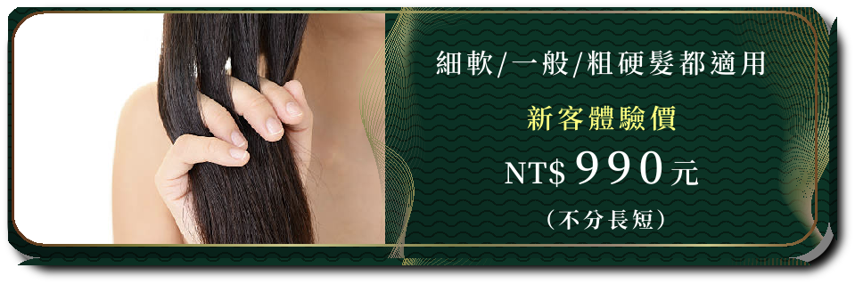

髮質差，造型再好也枉然
受到百般摧殘的髮絲
需要專業的修復才能恢復健康質地
甚至比以前更加絲滑柔順
需要專業的修復才能恢復健康質地
甚至比以前更加絲滑柔順
妳的髮質 總在不經意間受損？
- 電棒捲
- 平板夾
- 吹風機
- 陽光照射
- 染髮
- 燙髮
不論是平常使用的電棒捲、平板夾、吹風機，或是受陽光照射等熱傷害，都會造成髮質毛燥粗糙、分岔斷裂。而染髮後，容易造成頭髮枯黃，燙髮後則會使髮質變得更加粗糙毛燥。
若是缺乏養護，累積的傷害會使髮質越來越差，千萬不能輕忽！
若是缺乏養護，累積的傷害會使髮質越來越差，千萬不能輕忽！
深層護髮唯一首選

- 瞬間修護
- 強效維持
- 撫平毛躁
- 絕佳保濕
眾多護髮療程中最受好評，效果也最好的哥德式護髮，可修復、滋潤秀髮，並撫平毛躁，讓受傷的髮質恢復健康、更加滑順，達到的效果不是潤絲與一般護髮所能比擬。
更特別的是，會將最後一劑讓妳帶回家，做居家保養的保養安瓶，做到在家也能自己護髮的效果，讓柔順髮質維持更長的時間。
更特別的是，會將最後一劑讓妳帶回家，做居家保養的保養安瓶，做到在家也能自己護髮的效果，讓柔順髮質維持更長的時間。

護髮領導品牌
唯一採用沙龍級哥德式護髮產品 品質值得您信賴！
唯一採用沙龍級哥德式護髮產品
品質值得您信賴！
品質值得您信賴！
哥德式四段護髮
瞬間柔順有感，散發自信魅力
讓秀髮煥然一新的頂級沙龍體驗
為您的秀髮注入新生
從髮絲滋潤到到深處，打造細緻柔順的髮質
增添動人的水潤光澤
讓秀髮煥然一新的頂級沙龍體驗
為您的秀髮注入新生
從髮絲滋潤到到深處，打造細緻柔順的髮質
增添動人的水潤光澤
Take Hair專業護髮VS居家護髮
為什麼不在家自己護髮就好？
超過80%的回流率證明一切
兩者差異讓妳一比就知道！
哥德式四段護髮每一劑都有不同的香味，
讓妳在香氛的放鬆氛圍中完成護髮體驗。
讓妳在香氛的放鬆氛圍中完成護髮體驗。
第1劑－輕鬆感【果實印象】：柑橘果物、柳橙、葡萄
第２劑－滋潤感【柑橘印象】：多汁果物、檸檬、萊姆
第３劑－水嫩感【高級鮮花印象】：花調果香、 玫瑰、茉莉
第４劑－回味感【花果印象】：果調花香、 葡萄、玫瑰

專業設計師親手服務
平均8年以上的資深頭皮管理師為您親手服務
受過點亮培訓專業頭皮養護訓練，擁有豐富知識
比起一般助理更為專業，更懂得如何呵護您的秀髮
掌握每個小細節，讓整個護髮療程發揮最大的功效
受過點亮培訓專業頭皮養護訓練，擁有豐富知識
比起一般助理更為專業，更懂得如何呵護您的秀髮
掌握每個小細節，讓整個護髮療程發揮最大的功效
- 熟悉髮質： 選擇對您髮質最有效的護髮產品
- 水溫掌控： 精準掌控水溫，以免溫度過高，破壞營養吸收
- 水量控制： 透過經驗控制水量，避免沖洗過度乾淨，導致保護膜的流失
- 按摩手法： 以專業的手法按摩頭皮，確保護髮劑完全吸收
護髮前後比較


店面場景


將您的秀髮 捧在手心上呵護
Take Hair. We Take Care of Your Hair.
Take Hair. We Take Care of Your Hair.